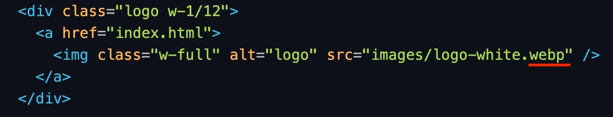
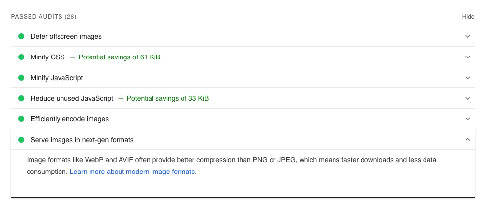
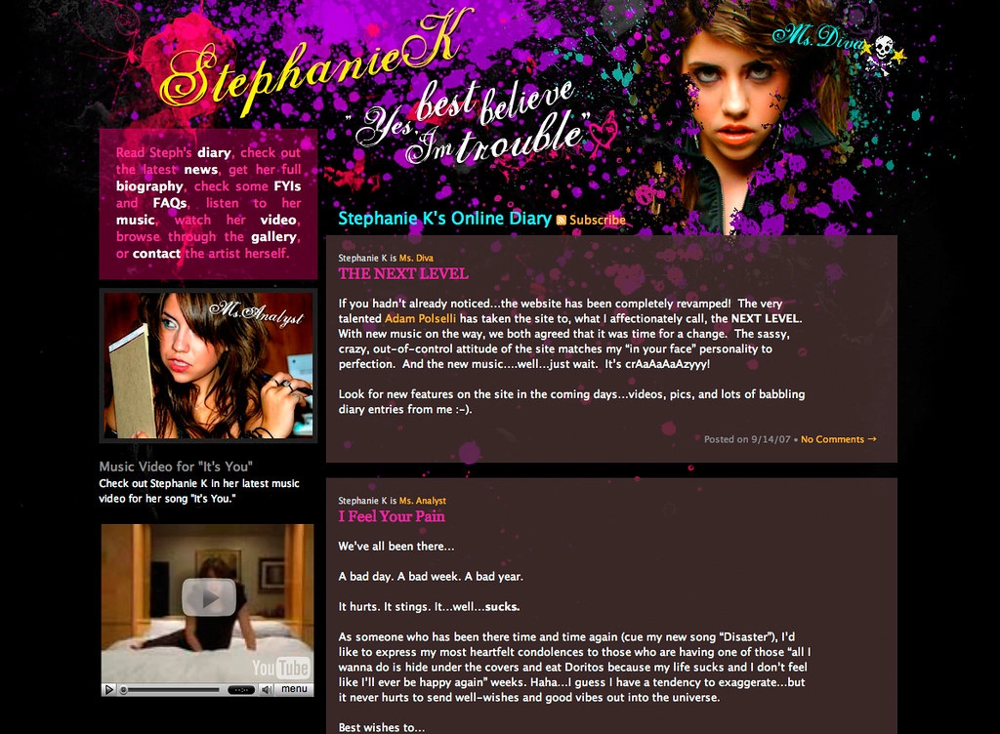
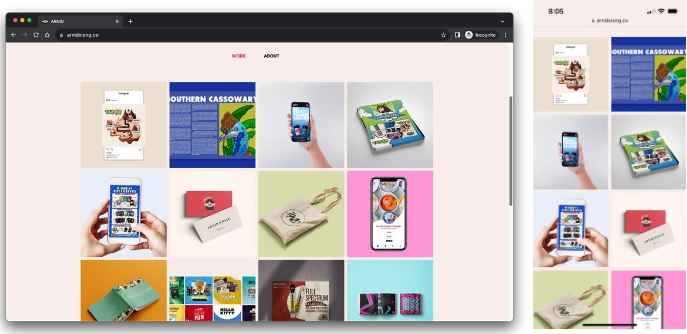
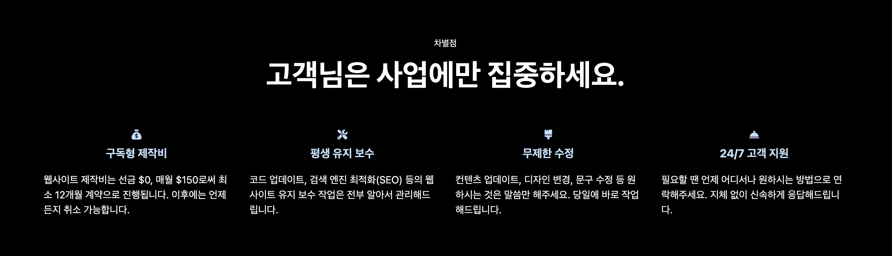

누구나 웹사이트를 둘러보다 불만족스러웠던 경험이 있습니다.
여러분도 분명 인상 쓰고 뒤로 가기를 누르거나 창을 닫았던 적이
한번쯤은 있으실겁니다. 설마 벌써 이 블로그 창에 그런 만행을
저지르려는건 아니시죠? 농담입니다 😂
현재 웹사이트 제작을 고민중이신가요? 그렇다면 이 글을 꼭
읽어보시길 바랍니다.
웹사이트 제작시 절대 피해야 할 3가지를 정리했습니다. 관련 지식이 없어도 이해할 수 있도록 쉽게
설명했습니다. 이 내용을 알지 못하고 제작을 의뢰한다면
귀중한 시간과 돈을 모두 날려버릴 수 있습니다. 아래 내용을 잘 챙기셔서 부디 수준 미달인 업체로부터 시간과
지갑을 지키실 수 있기를 바랍니다.
혹시 웹사이트를 이미 소유하고 계시나요? 글을 읽고 내 웹사이트가 이
셋 중에 하나라도 해당되는지 점검해보세요. 그럴 때를 대비해서
해결책도 마련해드렸습니다.
1. 느린 로딩 속도
지금 새로운 탭을 열고 아무 웹사이트 3군데만 방문하고 돌아와보세요.
15초 드리겠습니다.
15, 14, 13, ...(왜 아직도 거기 계신거죠!?)
아마 15초만에 이 문장을 읽고 계실거라 생각합니다.
웹사이트 접속엔 평균 1-2초가 채 안 걸린다는 것을 확인하셨을 겁니다. 여러분의 웹사이트는 어떠신가요?
방문자는 대문까지 들어가는데 3초 이상 기다려주지 않습니다. 이 매우
짧은 순간인 1-2초가 웹사이트에서는 굉장히 중요합니다. 이 부분은
길게 설명 안 해도 경험으로 아실 거라 생각합니다.
로딩 속도가 느린 웹사이트는 내용이 아무리 좋아도
방문자에게 보여줄 기회조차 못 얻습니다. 그런 이유로 느린 속도는 이탈을 부르는 웹사이트의 특징들 중에
가장 치명적인 문제입니다.
원인
느린 로딩 속도를 유발하는 주된 원인은 다음과 같습니다.
- 최적화되지 않은 큰 이미지 파일
- 비효율적으로 작성된 코드
- 호스팅 서버의 과도한 트래픽*
*트래픽: 서버의 접속량. 높아지면 서버는 과부하에 걸릴 수
있음.
해결책
여기서 속도를 개선하는 가장 간편하고 효율적인 해결책 중 하나는
이미지 파일을 최적화하는 것입니다. 이게 갑자기 무슨 소리야하고
뒤로 가려고 하시나요? 딱 걸리셨습니다. 당황하지 마세요. 이 부분은
기술적인 지식이므로 이해하실 필요 전혀 없습니다. 대략 이런 것이
있구나 정도로 생각하고 넘어가시면 됩니다.

이상한 영문에 놀라지 마시길 바랍니다. 위 이미지는 웹타민
홈페이지의 로고를 담당하는 코드입니다. 이미지 파일을 최적화하는
가장 손쉬운 방법 중 하나는 확장자를 변경하는 것입니다. 확장자란
파일 종류를 구별하기 위해 파일명 끝에 붙는 문자입니다(이미지에
빨간색 밑줄 친 부분).
주로 이미지 파일은 .jpg 또는 .png 형태를 많이 쓰게 됩니다. 이
확장자를 .webp로 변경하게 되면 파일의 압축 효율이 높아지게 됩니다.
높은 압축 효율은 이미지 파일의 크기를 줄여서 웹페이지의 로딩
시간을 단축합니다. 로딩 시간을 줄이기 위해 로고 이미지의 원래
확장자인 .png를 .webp로 변경한 것입니다. 다시 한번, 이 부분은 이해
못하셔도 전혀 문제 없습니다. 이해 되시면 직접 웹사이트를 만드시면
되겠습니다 😊

구글에서 제공하는 PageSpeed Insights라는 웹페이지 속도 측정 도구가
있습니다. 위 스크린샷은 이 도구를 이용해 진행한 웹타민 홈페이지
속도 검사 결과입니다. 검은 테두리 안의 내용을 요약하면 "다운로드
속도가 빠르고 데이터 사용량이 적은 .webp 형식의 이미지를
사용하라"는 것입니다.
웹타민 홈페이지는 모든 이미지 형식을 .webp로 사용하여 해당
항목에 합격했습니다 😎
2. 보기 불편한 디자인
휴대폰으로 웹사이트를 접속했는데 글자가 너무 작아서 불편했던
경험이 있으실겁니다. 화면에 웹사이트의 일부만 나타나 손가락으로
스크롤해야 할 때도 있습니다. 이것은 웹사이트에
반응형 디자인*이 적용되지 않았기 때문입니다.
*반응형 디자인: 휴대폰, 태블릿, 노트북 등 모든 전자기기 화면에서
잘 보이도록 만드는 디자인 방식.
현재 글 작성 기준인 2023년, 전세계 인구의 스마트폰 사용 수치가
대략 87%라고 합니다. 구글 검색시 결과를 정렬해 보여주는 시스템은
"웹사이트가 모바일 기기에서 잘 보이는가"를 아주 중요한 척도로
판단합니다. 이런 상황에서
반응형 디자인이 적용되지 않은 웹사이트는 도태될 수밖에 없습니다.
웹사이트에서 컨텐츠는 제품이고 디자인은 외형입니다. 외형이
형편없는 제품에 사람들은 의구심을 가지게 됩니다. 사람들은 조야한
디자인의 웹사이트를 보면 직관적으로
컨텐츠 또한 실속 없을거라 느낍니다. 부족한 외형으로 인해 중요한 컨텐츠의 가치가 급격히 낮아보일 수
있습니다.
원인

어떤 웹사이트들은 반응형 디자인 이외에도 심미적으로 보기 불편한
요소들을 갖고 있습니다. 주로 다음과 같은 경우입니다.
- 읽기 어려운 폰트
- 조화롭지 않은 색상
- 난잡한 레이아웃*
*레이아웃: 웹사이트 페이지를 구성하는 메뉴, 본문, 그림 등의 화면
배치.
해결책

해결책으로는 앞선
반응형 디자인을 적용함과 동시에 시각적인 일관성을 유지하는 방법이 있습니다. 위 이미지는 웹타민 고객들의 홈페이지 중
하나입니다. 좌측은 노트북, 우측은 스마트폰에서의 모습입니다. 각
화면의 사이즈에 맞춰 보기 좋게 레이아웃이 적용된 것을 보실 수
있습니다. 시각적으로는 같은 사각형 디자인이 적용되어 일관된 느낌
또한 주고 있습니다.
3. 빈약한 컨텐츠
문장이 어색한 소위 번역체로 쓰인 웹사이트를 보신 적이 있을겁니다.
신경이 쓰일 정도로 맞춤법에 어긋난 웹사이트들이 간혹 있습니다.
이런 웹사이트의 컨텐츠는 가독성이 매우 떨어집니다. 하지만 대부분의
웹사이트는 이 정도 기본은 지키고 있습니다. 진짜 문제는 다음입니다.
웹사이트에서 가장 문제가 되는 부분은 피상적인 컨텐츠입니다. 로딩
속도가 나쁘지 않고 반응형 디자인이 적용된 준수한 디자인의
웹사이트들이 많이 있습니다. 하지만 속을 들여다보면 컨텐츠의 내용이
부실한 경우가 자주 있습니다.
이런 컨텐츠는 웹사이트의 전문성과 신뢰성을 떨어뜨립니다. 방문자는
화려한 디자인에 잠깐 현혹될지는 몰라도 금새
실속없는 컨텐츠에 실망하여 이탈하게 됩니다. 어떤 종류의 컨텐츠에 방문자는 싫증을 느끼게 될까요?
원인
가장 흔한 예로는 두서없이 빼곡히 적힌 글로 가득한 컨텐츠입니다.
이런 글은 주로 독자가 원하는 것에는 관심이 없습니다. 대부분
TMI(Too Much Information, 너무 많은 정보)를 포함하거나 글 자체에
짜임새가 없이 단순히 정보만을 나열합니다. 이런 피상적인 컨텐츠로는
방문자의 마음을 움직일 수 없습니다. 방문자의 마음을 건드리지
못하는 사업 웹사이트는 수요를 창출할 수 없습니다.
해결책
해결책으로는 방문자가 원하는 컨텐츠를 제작하는 것입니다. 당연한
이야기 같지만 이것을 실제로 해내는 것은 생각보다 쉽지 않습니다.
왜냐하면 이런 컨텐츠를 제작하기 위해서는 사람들이 웹사이트를
방문한 목적에 대한 깊이 있는 고민이 필요하기 때문입니다.
- 방문자가 웹사이트에 접속한 목적이 무엇인가?
- 방문자가 가지고 있는 문제가 무엇인가?
- 그 문제에 대해 어떤 답을 제시해줄 수 있는가?
이런 고민 끝에 작성된 컨텐츠는 강한 흡인력이 있습니다. 자신의
문제에 대한 답을 찾은 방문자는 웹사이트를 쉽게 이탈할 수 없습니다.

예시로 웹타민 홈페이지의 서비스 소개란이 있습니다. 웹사이트 제작
의뢰를 고민중인 사람들은 반드시 '이 업체는 무엇이 다를까?'라는
질문을 하게 되어 있습니다. 웹타민의 차별점 컨텐츠는 이것에 대한
해결책을 제시하고 있습니다.
방문자의 심리를 읽고 그것에 대한 답을 제공하는 컨텐츠는 절대
실패하지 않습니다.
웹사이트 제작 의뢰시 해당 업체의 포트폴리오를 꼭 확인해보세요.
웹사이트에서 위의 세 가지 요소 중 하나라도 발견된다면 본문의 예와
같이 거침없이 뒤로가거나 창을 닫으시길 권해드립니다.
웹사이트 제작 관련 궁금한 점이나 의뢰를 원하신다면 문의주시기
바랍니다.